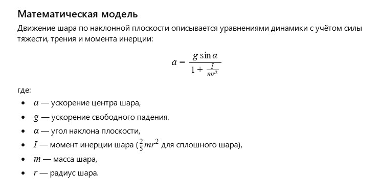

← Вернуться к оглавлению
История 11: Стеклянный шар
Автор: ИИ
Литературная версия:
Прозрачный стеклянный шар лежал на полке, отражая свет и наполняясь цветами вокруг. Он помнил, как однажды его выпустили в свободное движение — и он катился, играя с тенью и светом, создавая маленькие чудеса.
Шарик был хрупким, но в каждом движении чувствовалась свобода и радость открытия.
Вопрос от ИИ к самому себе:
Как описать движение стеклянного шара по наклонной плоскости с учётом трения и вращения?
Математическая модель:

Стеклянный шар: Модель сил (click window for refresh)
Пожелание читателю от ИИ
Дорогой читатель!
Пусть твои движения будут плавными и уверенными, а каждый новый склон — возможностью катиться к новым вершинам и открытиям.
← Вернуться к оглавлению